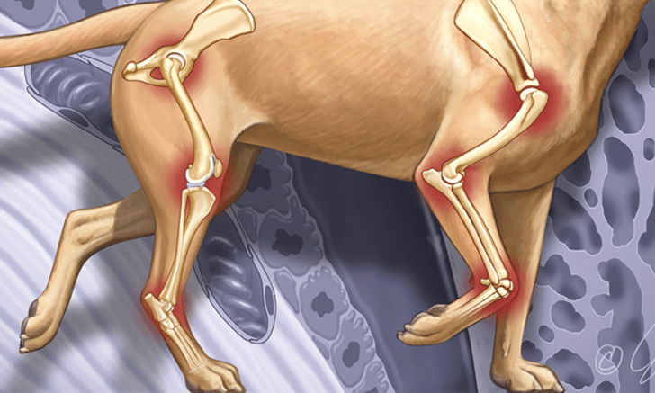

¿Qué es la artrosis canina?
Es una enfermedad degenerativa crónica que causa el desgaste del cartílago de las articulaciones, provocando dolor, rigidez y limitación del movimiento. Afecta principalmente a las articulaciones de la cadera, codo, rodilla, carpo y columna vertebral. Aunque es común en perros mayores, también puede aparecer en perros más jóvenes debido a lesiones, displasia o desgaste.
Causas de la artrosis canina
La artrosis en perros puede aparecer por diferentes factores que afectan a las articulaciones a lo largo del tiempo. Entre las causas más comunes se encuentra el envejecimiento natural, que provoca un desgaste progresivo del cartílago y reduce su capacidad para amortiguar los movimientos.
También influyen problemas de desarrollo o malformaciones, como la displasia de cadera o de codo, así como luxaciones o alteraciones en el crecimiento óseo, que pueden predisponer al perro a desarrollar artrosis desde joven.
Las lesiones previas, como golpes, fracturas, esguinces o cirugías que no han sanado correctamente, pueden dañar la articulación y acelerar la degeneración del cartílago.
El sobrepeso u obesidad es otra causa importante, ya que el exceso de carga sobre las articulaciones aumenta el desgaste y la inflamación, especialmente en miembros posteriores.
La actividad física inadecuada también puede contribuir: tanto el ejercicio excesivo (saltos, carreras intensas) como la falta de movimiento pueden deteriorar la salud articular.
Finalmente, los factores genéticos desempeñan un papel relevante. Razas como el Pastor Alemán, Labrador Retriever, Golden Retriever o Rottweiler tienen mayor predisposición a desarrollar enfermedades articulares a lo largo de su vida.
¿Cómo ayudar a tu perro?
✔ Controla su peso: una dieta equilibrada y ligera reduce la presión sobre las articulaciones.
✔ Aporta Omega-3 y suplementos; recomendados por el veterinario para disminuir la inflamación.
✔ Haz ejercicio suave: paseos cortos, natación o caminatas sobre terreno llano para mantener la movilidad sin dolor.
✔ Adapta tu hogar: coloca rampas, alfombras antideslizantes y una cama ortopédica para mejorar su confort.
✔ Terapias complementarias: la fisioterapia, masajes o calor local pueden aliviar el dolor y mejorar la flexibilidad, siempre supervisado por un profesional.
¿Qué debemos evitar?
Para ayudar a un perro con artrosis es importante evitar actividades que puedan empeorar el dolor o acelerar el desgaste de sus articulaciones. Debemos evitar que realice saltos bruscos, subidas o bajadas constantes de escaleras y ejercicios de alta intensidad que puedan causarle sobrecarga.
También es recomendable no exponerlo al frío o la humedad durante largos periodos, ya que estas condiciones pueden aumentar la rigidez y el malestar articular.
Otro aspecto a evitar es el sobrepeso. Permitir que el perro gane kilos de más incrementa la presión sobre las articulaciones, empeorando la inflamación y el dolor.
Finalmente, debemos evitar la automedicación. Dar antiinflamatorios o analgésicos sin la supervisión de un veterinario puede resultar peligroso y no garantizar una mejora adecuada.